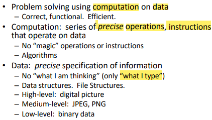
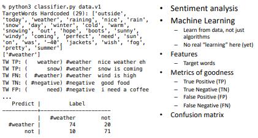
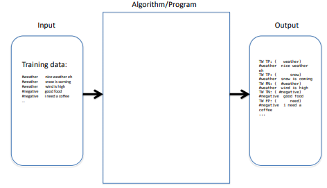
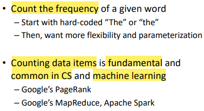
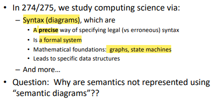
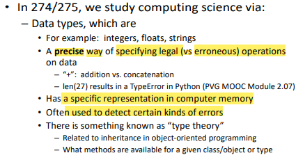

Lecture 3
Morning Problem
- Download the .pdf file (about the problems) and the .tar.gz file (source code of the problem)
Once finish, execute opentestcenter.sh
Presentation Error, won't deduct mark (incorrect output format, correct result)
"EOF is not inherently an error, but an unexpected EOF may cause an error"
- "EOF" is sent by input "ctrl-d"
Computational Thinking (CT)

Problem solving using computation, centered at what digital co1mputer can do on problem solving
- Tool and foundation of Computer Science Computation and Data
Computation
- precise operations, instructions need to be implementable, possible, doable.
Side Note: Difference between JPEG and PNG
- JPEG represents the bit map of the image but also try to implement compression
- loose file format, which allows the original imagine to be loose to repesent the image in fewer byte (If it's done well, the lost detail can be ignored)
- PNG represents the bit map of the image without losing any data or information
- JPEG represents the bit map of the image but also try to implement compression
Data
In memory, information will be called data strcutures.
In disk, information will be called file strcutures.
Classifier: About the Weather

Recall Classifer
- A software that takes input, and for each input instance, it will say what class the input instance belong to
Recall Supervised Learnging
- Somebody or something has to declare about a thing through authority whether is yes (true) or no(false)
Target Words
Hardcoded
Has some flaw (see Metrics of Goodness)
Metrics of Goodness
False Positive - the test result incorreclty indicates the presence of a condition when it is not present
- e.g "I need a coffee" is false positive. The classifier classify it as a sentence about weather because "need" is in the hardcoded target words but in reality, this sentence is not about weather
False Negative - the test result incorreclty fails to indicate the prescence of a condition when it is present
- e.g "wind is high" is false negaitve. The classifier shouldn't classify this sentence as a sentence about the weather because "wind" is not in the hardcoded target words (although "windy" is in it). However, the classifer, in fact, does classify this sentence as a sentence about weather.
Confusion Matrix
- Presents the number of occurrence of TP, TN, FP and FN
CT Diagram (v1.0)

Input Algorithm / Program Output
Input (Training data) contains two columns
- label
- string
Algorithm / Program
- take string, break into individual word and compare with the hardcoded target word
Output contains
- classfication (TP, TN, FP, FN)
Exmaple Problems

Example Problem 1
- Runtime Error an error is only visible when the program is running
What is computer science?


Why are semantics not repesented using "semantic diagrams"?
syntax, about the source code file, based on what's in the source code
semantic, relate to runtime (dynamic) information (e.g input)